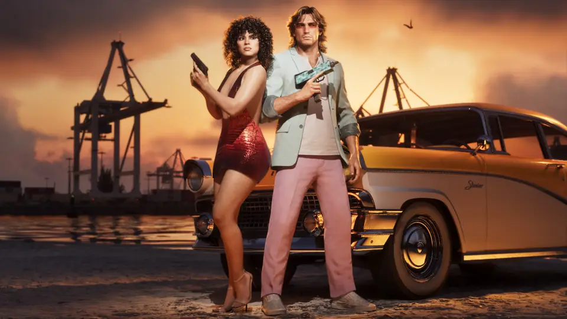
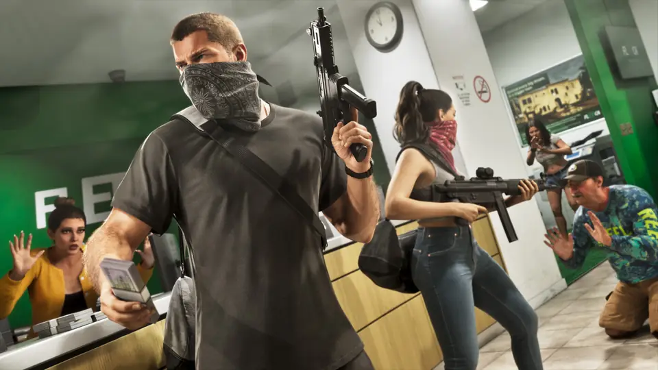
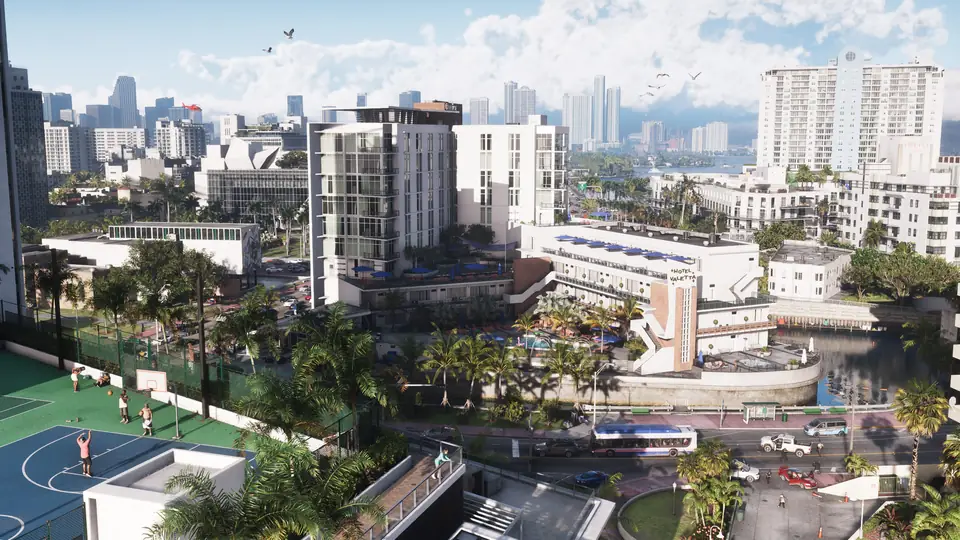
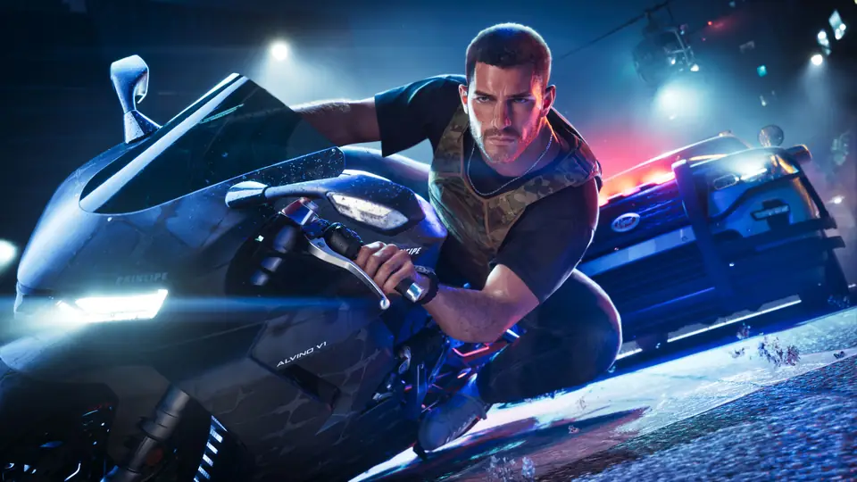

GTA 6 : le guide en français
Le guide GTA 6 en français qui te fait gagner du temps : sortie, éditions, carte, personnages, véhicules, astuces. Que du vérifié, sources à l'appui.
Les outils
Checklist du jour J
La checklist interactive GTA 6 : préchargement, espace disque, mises à jour, anti-spoilers, bonus à vérifier. Coche au fur et à mesure, ta progression est gardée.
Liste des véhicules GTA 6
Tous les véhicules de GTA 6 confirmés officiellement : Grotti Cheetah, Vapid Stanier, Dominator Buggy, Squalo… Filtre par type et par édition.
Ce qu'il te faut pour GTA 6
Le matériel utile pour jouer à GTA 6 sur PS5 et Xbox Series : SSD compatible, manette, casque, édition du jeu. Ce qui sert vraiment, ce qui est inutile.
Les guides du moment

Date, heure de sortie, prix et plateformes
GTA 6 sort le 19 novembre 2026 sur PS5 et Xbox Series X|S. Heure de sortie en France, Belgique, Suisse et Québec, prix des éditions, préchargement.

Standard ou Ultimate : laquelle prendre ?
Tout le contenu de l'édition Ultimate de GTA 6 (79,99 € contre 99,99 €) : voitures, armes, boutiques exclusives, mission spéciale. Notre avis pour choisir.

Bonus de précommande : Vintage Vice City Pack
Le Vintage Vice City Pack, bonus de précommande de GTA 6 : Vapid Stanier ’55 et son garage, tenues années 80 de Jason et Lucia, motif d'arme. Qui l'obtient et comment.

Tous les personnages de GTA 6
Qui sont Jason Duval et Lucia Caminos, les héros de GTA 6 ? Et Cal, Boobie, Dre'Quan, Real Dimez, Raul, Brian ? Les 8 personnages officiels expliqués, sans spoiler.

Carte de GTA 6 : les 6 régions de Leonida
La carte de GTA 6 expliquée : l'État de Leonida, Vice City, les Leonida Keys, Grassrivers, Port Gellhorn, Ambrosia et le mont Kalaga. Ce qu'on trouve dans chaque région.

Checklist : avant de lancer GTA 6
Préchargement, espace disque, mode repos, réglages, anti-spoilers : la checklist complète à faire avant de lancer GTA 6 le 19 novembre.
Xbox One, PS Plus, Game Pass : ce qu'il faut
Pas besoin de PS Plus ni de Game Pass pour l'histoire de GTA 6. Sur Xbox One, le jeu se joue en streaming via le Cloud Gaming Xbox dès le 19/11 (jeu à acheter). Les conditions, expliquées.
Les arnaques GTA 6 à éviter
Plus de 200 faux sites GTA 6 repérés en 24 h par Avast. Faux PS Store, faux GTA 6 PC, fausses applis, fausses clés bêta : comment reconnaître les arnaques et acheter sans risque.
GTA 6 sur PC : ce qu'on sait
Pas de version PC de GTA 6 annoncée. L'historique de Rockstar (GTA V, Red Dead Redemption 2) et pourquoi les « GTA 6 PC » à télécharger sont des arnaques.